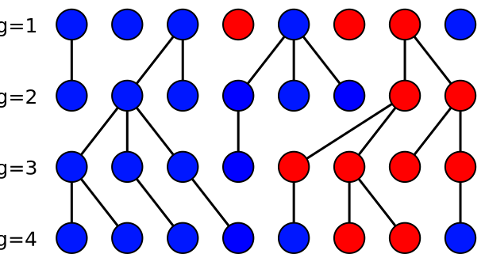
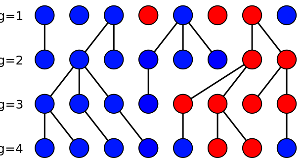
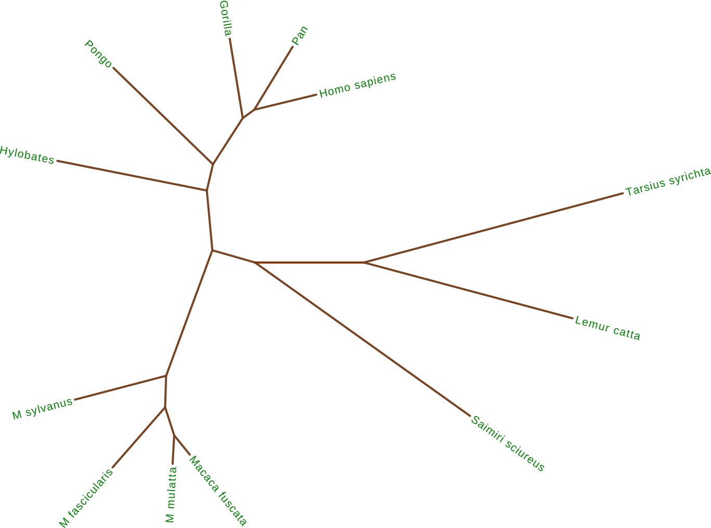

Computational Phylogenetics using BEAST 2
Centre for Computational Evolution
Biology
What is evolution?
Evolution is change in heritable traits of biological populations over successive generations.
Evolutionary processes give rise to biodiversity at every level of biological organisation, including species, individual organisms, and genes.
What is a phylogenetic tree?
A phylogenetic tree is a branching diagram or "tree" showing the evoluionary relationships between various species, individuals, or genes.


Evolutionary processes
Evolution is governed by three main processes:- Reproduction
- Process by which heritable traits are passed on to the next generation.
- Mutation
- Usually occurs due to noise in reproductive process.
- Provides variability in traits.
- Selection
- Probability of individual reproducing may depend (weakly or strongly) on value of heritable trait.
Populations evolve, individuals do not!
Genetic drift
The random fluctuation in the frequency of a trait or allele (gene variant) distribution within a population due to the demographic process.
Modelling neutral genetic drift


 

- All individuals descend from a common ancestor at some point in the past.
- Probability that the descendants of a given individual "take over" is $1/2N$.
The molecular clock hypothesis
- In a single generation a new allele is produced in the population with probability $2N\mu$.
- Any individual gene eventually becomes fixed in the population with probability $1/2N$.
The probability per generation that a new allele fixes is therefore $\mu$: independent of population size!
This is not exactly true.
The phylogenetic inference problem
Given a set of $M$ sampled molecular sequences, infer the evolutionary relationships between them.
In a sense this is a just a clustering problem...
The phylogenetic inference problem
- Edge lengths may represent genetic distance or time (if the molecular clock rate is known).
- How can we do better than this?
The genealogical process
- In the absence of selection, we can consider the process of tree generation in isolation.
- There are numerous models that apply for different phylogenetic trees, including:
- The Yule process as a simple model for species tree generation, and
- the coalescent process as a simple model for gene tree generation.
The Yule process
Assumes a constant rate of speciation through time:Single parameter is the speciation rate $\lambda$.
The coalescent process
Arises as a limit of many models in population genetics.- Probability of coalescence in single generation $\sim\binom{k}{2}\frac{1}{N}$
- Geometric distribution between coalescence events.
Example coalescent tree
Coalescent trees and population dynamics
The coalescent rate is inversely proportional to the (effective) population size.How do we go about combining all of these different pieces of information?
The answer is...
Bayesian statistics
The meaning of Probability
We use the following definition of probability:For propositions $A$ and $B$, the probability $P(A|B)$ is the degree to which $A$ is believed to be true,
on the condition that $B$ is true.
- Who is doing the believing?
- Probability is subjective.

Manipulating probabilities
There are only two rules for manipulating probabilities:- The product rule: $$P(A|B,C)P(B|C)=P(A,B|C)$$ where $A,B$ represents $A$ and $B$.
- The sum rule: $$P(A|C) + P(B|C) - P(A,B|C) = P(A\vee B|C)$$ where $A\vee B$ represents $A$ or $B$.
That's it! You can now do Bayesian statistics.
Bayes' rule
Suppose we have a probabilistic model $M$ with parameters $\theta_M$. Given data $D$ which we assume has been generated by the model, what can we learn about the parameters?- Our model allows us to evaluate $P(D|M,\theta_M)$.
- We want to know $P(\theta_M|D,M)$.
Mechanically applying the product rule yields
$$\color{darkred}{P(\theta_M|D,M)}=\frac{\color{yellow}{P(D|M,\theta_M)}\color{darkblue}{P(\theta_M|M)}}{P(D|M)}$$
with terms named the posterior, likelihood and prior.
Bayesian inference
Bayes' rule gives us a natural framework for drawing on many sources of information:- $\color{darkblue}{P(\theta|M_{\theta})}$ describes our state of knowledge prior to receiving $D$. (May still depend on expert knowledge.)
- $\color{#808000}{P(D|\theta,M_{\theta})}$ is the likelihood of $\theta$ given $D$. Describes how the data modifies our knowledge of $\theta$.
- $\color{darkred}{P(\theta|D, M_{\theta})}$ describes our state of knowledge after receiving $D$.
The posterior of one analysis may be the prior of a second.
Bayesian phylogenetic inference
Goals of Bayesian phylogenetic inference
The goal of phylogenetic inference is generally to learn about the phylogeny of a set of sampled genetic sequences.
As Bayesians we accomplish this by seeking to characterise the joint posterior: $$P(T,\mu,\theta|D) = \frac{1}{P(D)} P(D|T,\mu)P(T|\theta)P(\mu)P(\theta)$$
- $P(D|T,\mu)$ is the tree likelihood
- $P(T|\theta)$ is the tree prior
- $P(\mu)$ and $P(\theta)$ are the parameter priors
We simultaneously learn about the tree and the parameters!
The Tree Likelihood
The tree likelihood $P(D|T,\mu)$ is the probability that the observed sequences were produced by evolving a single ancestral sequence down $T$ under a neutral substitution model with parameters $\mu$.
There is an efficient algorithm for computing this (summing over all possible ancestral sequences): Felsenstein's pruning algorithm.
The Tree Prior
The tree prior $P(T|\theta)$ is the probability for the tree $T$ based solely on the genealogical model and its parameters $\theta$.
(May also be considered the likelihood for the genealogical model parameters $\theta$ given the tree.)
- Yule prior (speciation rate $\lambda$)
- Coalescent prior (population function $N(t)$)
- Structured Coalescent prior (sub-population sizes $N_i$, migration rates $m_{ij}$))
- Birth-death priors (birth and death rates)
- Transmission tree priors (infection, recovery rates)
- ...
How many trees are there?
Markov Chain Monte Carlo (MCMC)
MCMC basics
MCMC (aka the Metropolis-Hastings algorithm) allows us to generate samples from a target distribution $P(\vec{x})$ assuming that we can evaluate $\alpha P(\vec{x})$ where $\alpha$ is an arbitrary unknown constant.
MCMC works by performing a biased random walk over $\vec{x}$ constructed so that the relative frequency of visiting state $\vec{x}$ at equilibrium is equal to $P(\vec{x})$.
Flexible, yet extremely computationally intensive!
MCMC robot
MCMC robot
Pure random walk
Burn-in

Convergence
BEAST
BEAST is a free (as in freedom) software package that uses MCMC to perform Bayesian phylogenetic inference.
Project website: beast2.org
- Download software
- Documentation and FAQs
- Tutorials
- ...
BEAST components
- BEAST2: Software implementing MCMC for model parameter and tree inference
- BEAUti: GUI for setting up the input file
- Tracer: Tool for summarizing parameter posteriors
- Tree Annotator: Tool for summarizing tree posteriors
- Figtree: Tool for visualising trees
BEAST Workflow
BEAST Tutorials
Tutorials
Tutorial 1:
Divergence time dating.
Tutorial 2:
Bayesian skyline plot.